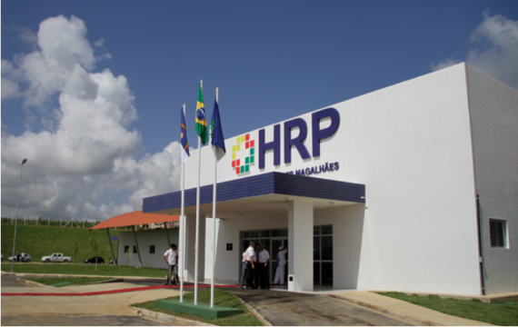
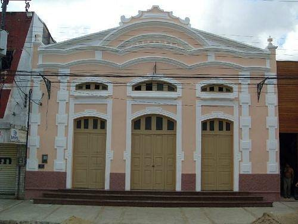

Alguns serviços em Palmares
Hospital Regional
O Hospital Regional de Palmares foi inaugurada em 02 de agosto de 1942 pelo então Prefeito Dr. Pedro Afonso de Medeiros. Funcionou no prédio adaptado na Avenida Luiz de França, prestando serviços à população,permanecendo até 1975.Teve como seu primeiro diretor Dr. Mozart Borges Bezerra. Em março de 1975, foi transferido para a Unidade Mista dos Palmares, localizado na Av. Pedro Paranhos, foi construído pela Fundação de Serviço de Saúde Pública. No dia 29 de setembro de 1996, com as presenças do Exmo. Sr. Dr. Adib Jatene, Ministro da Saúde, Exmo.
Sr. Dr. Miguel Arraes de Alencar, Governador do Estado de Pernambuco, Exmo. Secretários do Estado e demais autoridades . Quando houve a estadualização do referido Hospital, passando o mesmo, a partir daquela data, a ser gerido pelo Estado de Pernambuco.
Após a grande enchente ocorrida am Agosto de 2000, o Hospital Regional dos Palmares foi parcialmente destruído e reinaugurado em 27 de agosto de 2002. Com a catástrofe de 2010 ele foi totalmente devastado e um novo complexo hospitalar foi construído com modernas instalações e entregue a população pelo governo de Eduardo Campos em 10 de dezembro de 2011. A partir de então passou a ser gerido pela OS Fundação Manoel da Silva Almeida em parceria com a SES-PE promovendo a saúde aos 500 mil habitantes da zona da mata sul.
Cine Teatro
O Cine Teatro Apollo, em Palmares-PE, foi tombado por sua importância. É uma construção de estilo eclético.
